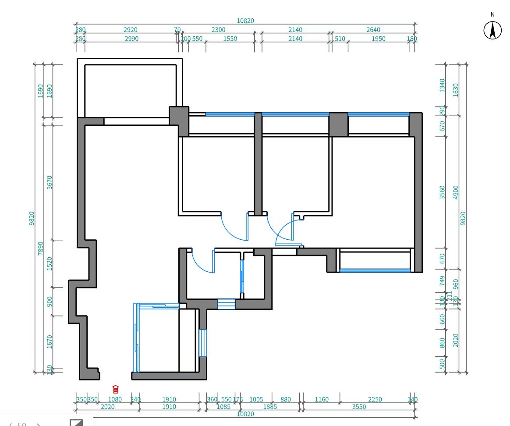

按测量图与现场照片还原 · BASE 03 · MYM-31 · 吊顶风口核对 / 家具调整 / 抽拉床双状态

空间定义 · 操作说明与核对记录 · 建筑白模 GLB
单位：米。琥珀色字段为显示暂值，修改只用于本次预览；请导出记录保存。客厅完成面 ±0.000 为比较基准。建筑结构面与原始图纸不会随装修阶段改变。
另待现场定位：冰箱位、燃气检修净距、检修口、窗帘盒宽深、边吊宽度。未完成实测前不可将显示体块当成定制或施工尺寸。